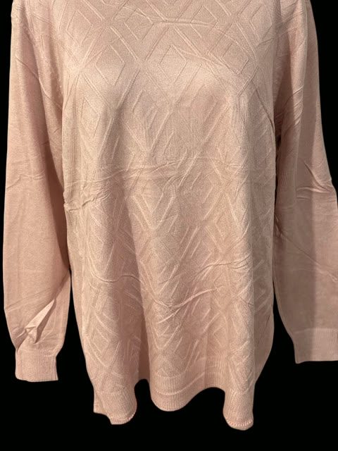

El otoño llega con prendas que se sienten antes de verse: punto suave, tonos empolvados y volúmenes que abrazan sin apretar. La silueta se relaja, pero la intención se mantiene. Un suéter de textura marcada basta para ordenar el conjunto; lo demás acompaña en silencio. Así se escribe la temporada: con piezas que duran y combinaciones que no necesitan explicarse.
MODA, ARTE Y CULTURA
La nueva silueta del otoño
Ensayo · Tendencias